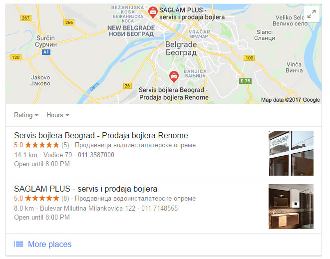
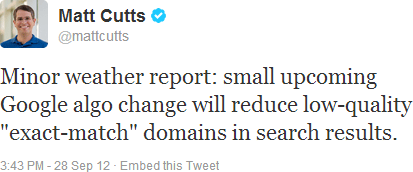
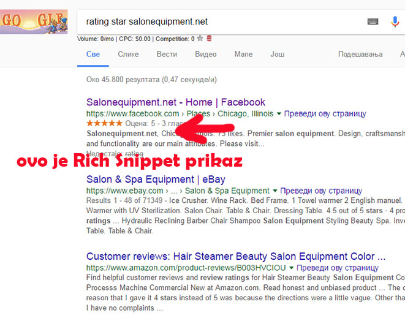
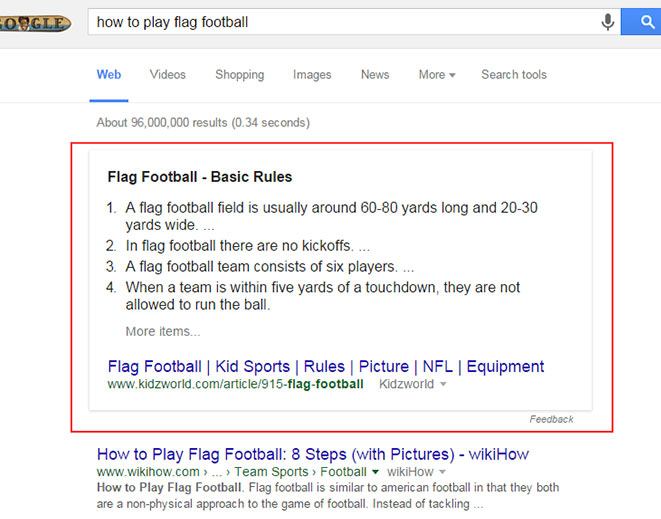

Dali Vam je potreban SEO u 2019. i zašto?

SEO smernice za 2019: Šta obavezno morate uraditi za vaš sajt
U ovom tekstu možete pročitati koji su to najnoviji SEO trendovi u 2019 godini
Kao što znate SEO se menja iz godine u godinu. Zadnjih par godina brže nego ikada. Gugl hoće da zadrži poziciju najboljeg svetskog pretraživača, što uistinu i jeste.
Da bi to ostao uvrstio je u svoje algoritme pored dosadašnjih 200 stavki koje utiču na rangiranje, još neke koje će presudno uticati u ovoj i narednim godinama.
Brže nego ikad gugl pronalazi loše sajtove. To su sajtovi koji nemaju ažuriran sadržaj, imaju kopiran content i obezbedjuju puno neprirodnih backlinkova ka njihovom sadržaju. Na taj način pokušavaju da obmanu gugl i steknu bolje pozicije.
Šta gugl želi?
Jednom rečju gugl želi kvalitetne sajtove na prvoj strani. Sajtove koji imaju kvalitetan sadržaj, koji nemaju puno grešaka na svom sajtu, koji pružaju lepo korisničko iskustvo koje se ogleda brzim učitavanjem i optimizovanošću za mobilne i tablete. Puno zanimljivog sadržaja koji daju mnoge odgovore na različite probleme koji muče današnje posetioce sajtova.
Koje su to novine u SEO trendovima u odnosu na prošlu godinu?
Ono što je novina i što će svakako biti jedan od prva 3 faktora za rangiranje sajtova u 2019 godini je korisničko iskustvo. Gugl sve više obraća pažnju na to kako korisnici reaguju na rezultate pretrage i ponašanje na samom sajtu.
Kako se meri korisničko iskustvo
Merenje CTR-a (Click True Rate) je jedna od stavki uradjena u svrhu preciznijeg rangiranja sajtova. Gugl sve čini za bolje korisničko iskustvo. Primećuje da posetioci na neke sajtove (koji su na prve 3 pozicije), manje klikću u odnosu na one koji su od 3 do 10 pozicije. To će biti osnov za novu stavku u algoritmu.
Kako poboljšati CTR
U suštini vrlo je jednostavno. Korisnici koji pretražuju internet kucaju u gugl pretraživač odredjene pojmove, pitanja itd. kako bi dobili odredjene odgovore ili rešili neke svoje probleme ili se pak samo zabavili. Vi ste ti koji trebaju da daju odgovore na ta pitanja.
Gugl rezultati pretrage su naši sajtovi i blogovi. Zato je neophodno svaki tekst koji pišete mora biti fokusiran kao mogući odgovor na neko pitanje.
Na primer neko kuca na guglu Šta je SEO? vi želite da se pozicionirate za tu reč na guglu. Prvo što treba da uradite je da istražite šta su već drugi sajtovi pisali na ovu temu. Vi bi onda trebali da napišete kvalitetniji i bolji tekst.
Naslov stranice ili title tag koji se vidi u rezultatima pretrage mora dati naznaku da ćete baš vi dati pravi odgovor. Naslov može glasiti Šta je SEO i zašto vam je neophodan. Druga stvar je meta description ili opis stranice to je deo ispod naslova na rezultatima pretrage. Tu bi takodje trebalo napisati nešto zanimljivo što će privući posetioca da klikne baš na vaš sajt.
Ako ste ovo dobro odradili velike su šanse da će vam CTR biti preko 10% što je zadovoljavajuće.
Zadržavanje posetioca što duže na sajtu
Kad je posetioc došao na sajt sad ga trebate što duže zadržati. Ovo ćete uspeti ako pišete kvalitetne i zanimljive tekstove koje će ljudi voleti da čitaju. koji će dati prave odgovore na postavljena pitanja.
Gugl preko algoritma prati dal posetioci skroluju vaš sajt samo 25%, 50% ili dodju do kraja sajta ili futera.
Ako su pročitali ceo tekst već ste uspeli i to je jedna od garancija da ćete se zadržati na prvoj strani gugla.
Savet bi bio da ispod teksta ubacite još 3-4 druga teksta kako bi posetioc pročitao još neki vaš tekst. Što imate više pročitanih tekstova to će vaš sajt dobiti veći rejting kod gugla.
Suprotno od ovoga ako posetioc dodje na vaš sajt i posle manje od 10 sekundi klikne dugme BACK i ode sa vašeg sajta, guglu je to znak da posetioc nije dobio ono što je tražio. Nije strašno ako je to par posetioca ali ako je veliki broj gugl zna da vaša stranica nije kvalitetna za tu ključnu reč.
Ovo se već podrazumeva da imate:
#1 Sajtovi optimizovani za mobilni
Najkvalitetniji sadržaj može ostati nezapažen ukoliko sajt nije optimizovan za mobilne. Gugl čak ručno pregleda kako se sajt pokazuje na mobilnom telefonu, kakav sadržaj pruža, i koliko ima kojekakvih iskačućih prozora. U buduće morate smanjiti iskačuće prozore, jer je utvrđeno da to nervira korisnike sajta. Morate naći druge načine kako ćete istaći nešto što želite.
#2 Kvalitet sadržaja i njegova optimizacija
Pišite kvalitetan sadržaj koji je bolji od konkurencije. Obradite svaku temu tako da možete sebi da kažete nema dalje. Kada napišete kvalitetan tekst morate ga optimizovati. Optimizujte TITLE i META DESCRIPTION tag kao da je oglas u pitanju. Obavezno glavna ključna reč u naslov, a opis da bude zanimljiv tekst, kako bi privukao što više ljudi da kliknu na vaš sajt u rezultatima pretrage. Kao da je Oglas. Fokusirajte tekst na jednu ključnu reč, tako ćete podići verovatnoću da vaš tekst izbije na prvu stranu gugla. Pišite različite sadržaje u smislu prodajne stranice (Sales pages), stranice koje su zanimljive za šerovanje, stranice koje generišu subscribere itd.
#3 Backlinkovi, linkovi i samo linkovi
Nije tajna da su backlinkovi još uvek najbitniji za bolju pozicioniranost sajta. Ali ne bilo koji linkovi, samo sa kvalitetnih dobro rangiranih portala i blogova koji idu iz teksta, ne iz futera.
#4 Gugl mape i lokalni biznis
Radi globalno misli lokalno. Prijavite vašu firmu u gugl mapama kako bi možda i preko mapa izašli na google pretragama. To vam daje ozbiljnost u poslovanju a guglu daje znak da ste relevantna firma za taj region.
#5 Budite najbolji u onome što radite
Čitaoci mogu vrlo brzo da otkriju ko je ekspert u kojoj oblasti a ko nije, dok će blogeri šerovati najkvalitetniji sadržaj. Isplati se pisati kvalitetne tekstove. Na ovaj način ćete generistati puno kvalitetnih backlinkova besplatno.
#6 Gradite svoju publiku
Ponašajte se kao da ste rok zvezda. Vodite računa o svojoj publici. Osluškujte šta je zanima, kako da joj pomognete, bolje je imati 50 pravih pratilaca nego 500 nekih za koje ne znate ni ko su ni šta ih interesuje.
#7 Fokusiranje na Brend

Gugl je izjavio da će smanjiti uticaj domena koji imaju ključnu reč u sebi. Fokusirajte se na Brend. Ukoliko pominju vaš Brend u drugim medijima napredovaćete na guglu za mnoge ključne reči. Kod gugla ćete na taj način stvoriti veliki autoritet, tako da sve što objavite može doći na prvu stranu. Baš kao i ovaj naš tekst SEO smernice za 2018 godinu
#8 Ključne reči kao duže fraze
Pokušavajte da otkrijete koja bi to pitanja bila koja interesuju korisnike pa onda kvalitetno istražite datu temu i napišite odgovore na ta pitanja. Korisnici uglavnom koriste internet da dobiju odgovor na neka pitanja, da se zabave ili nešto nauče. Vi se pronadjite šta vam najviše leži.
#9 Brzina učitavanja sajta
Gugle je uveo AMP (Akcelerator Mobilne Stranice) kako bi poboljšao brzinu učitavanja sajtova. Korisnici danas hoće brzo da dobiju odgovor na problem koji ih muči. Ukoliko vi možete brzo da im servirate odgovor ostaće kod vas na sajtu. Ukoliko vam se sajt sporije otvara otici ce sa njega pre negoli otvore drugu stranicu, na taj način vam se povećava bounce rejting. Postoji nekoliko kvalitetnih AMP pluginova za wordpress.
#10 Infrastruktura sajta
Kao i u jednom gradu ako su ulice male i zakrčene, korisnici će biti nervozni. Zato je mnogo bitno da napravite pravilnu i kvalitetnu infrastrukturu sajta kako bi se korisnici kretali lako i brzo. Koristite pravilo najviše 3 koraka do krajnje destinacije
#11 Gugle rich snippet
Ukoliko imate prodavnicu obavezno optimizujte sadržaj za gugl rich snippet. Vaši proizvodi će u pretraživaču izgledati bogatiji sa rejting zvezdicama (google review). Tako će se lakše odlučiti da kliknu baš na vaš proizvod. Ujedno to vam stvara i odgovornost o pruženim uslugama, kako ne bi imali loših komentara. Nemojte se bojati ni pokojeg lošeg nije to ništa strašno, uvek ima ljubomorne konkurencije.
#12 Obratite pažnju na Featured Snippet
Featured snippet je nulta pozicija na guglu. Ukoliko je neko postavio pitanje a vi ste napisali tekst sa tim istim pitanjem i sažetim odgovorom, velikaverovatnoća je da ćete izaći na nultu poziciju. Broj poseta će vam se drastično povećati.
#13 Https protokol

Prebacite se na https – sigurnosnu konekciju. Gugle će davati objašnjenja da sajtovi nisu sigurni ako nemaju https protokol.
#14 Osvežavajte postojeći sadržaj
Osvežavajte stare stranice koje su imale dosta poseta sa novim informacijama. Ukoliko želite da promenite i link obavezno koristite 301 redirekciju kako ne bi izgubili rejting stranice. Stranice koje nisu imale pregleda i smatrate da nisu relevantne više slobodno obrišite.
#15 Ne oslanjajte se samo na SEO
Što kaže stara narodna: „Ne držite sva jaja u istoj korpi“. Ukoliko vaši posetioci dolaze isključivo preko organske pretrage to nije dobro. Može se desiti da padnete na guglu pa da vam stane prodaja. Gradite vašu reputaciju na raznim kanalima koji su pogodni za vaš biznis.
#16 Shema.org JSON-LD
Svuda koristite shemu za proizvode, artikle, neće vam se povećati pozicija ali će vam proizvodi bolje izgledati na rezultatima pretrage a samim tim biće i više klikova
Ukoliko vam je ovaj tekst bio koristan, sigurno će biti i vašim prijateljima pa vas molimo da ga podelite na vašoj društvenoj mreži. Hvala!

13 Saveta kako privući posetioce na sajt
Korisni saveti kako da unapredite posetu na sajtu....
Detaljnije...

Linkbuilding Tutorijal za 2019
Zašto su backlinkovi i dalje najvažniji za optimizaciju sajta...
Detaljnije...

Kad dolaze SEO rezultati?
Kada SEO počinje da generiše veću prodaju, kad dolazi rangiranje...
Detaljnije...